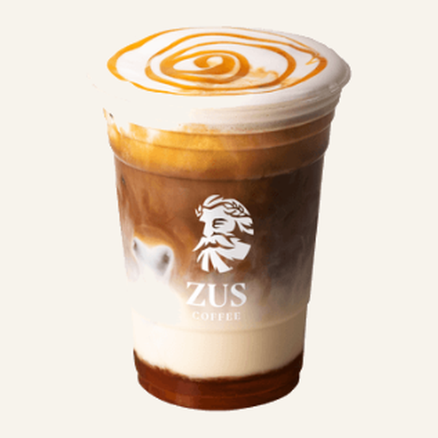
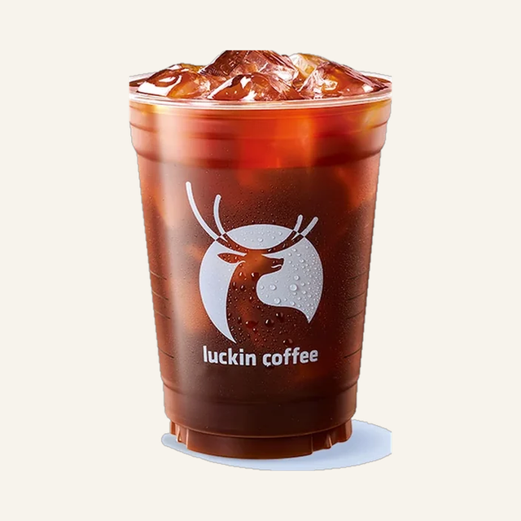
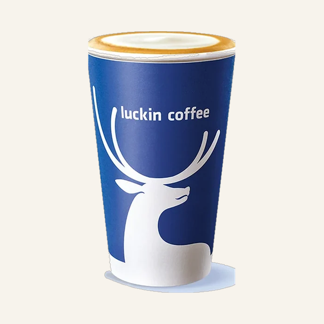
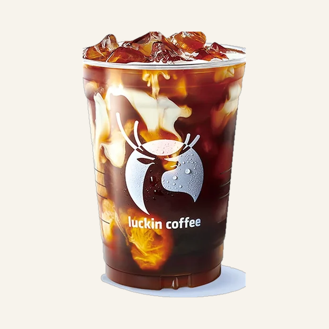
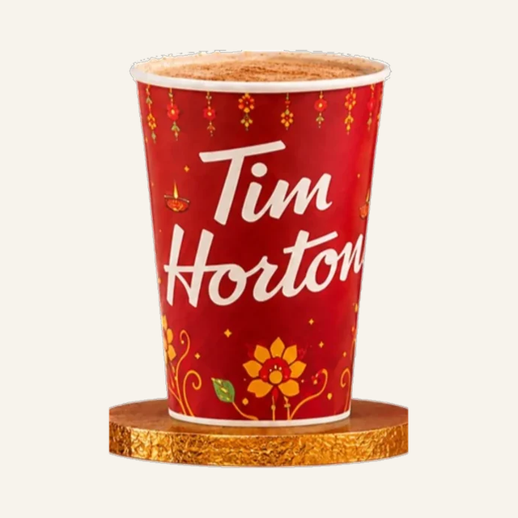
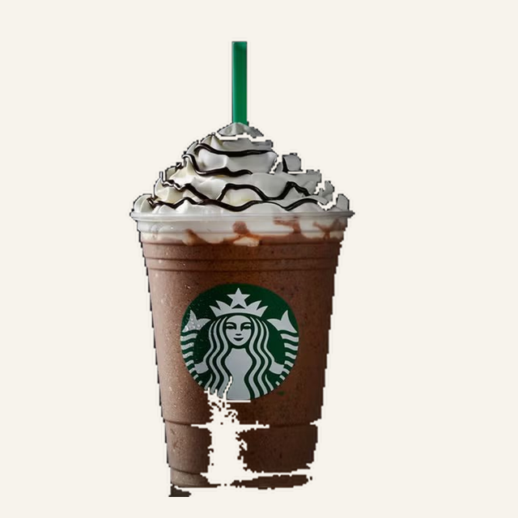
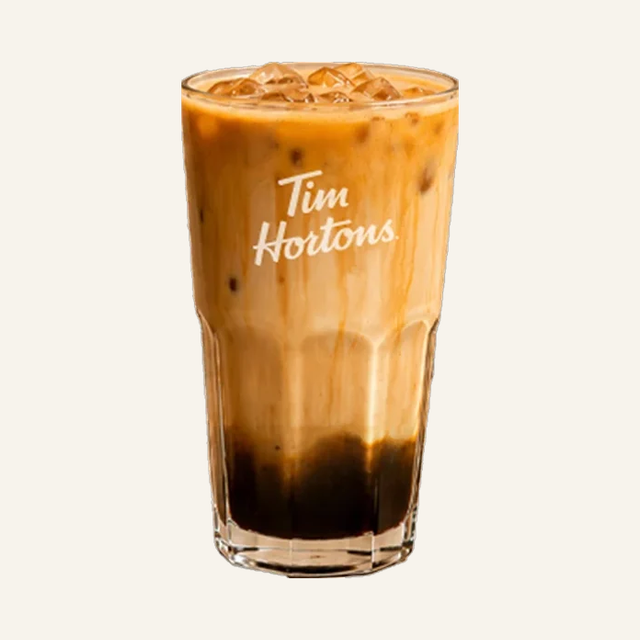
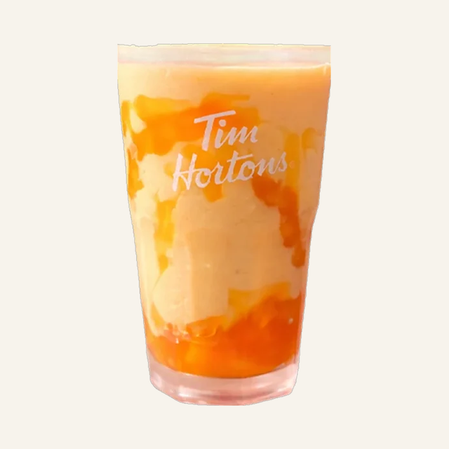
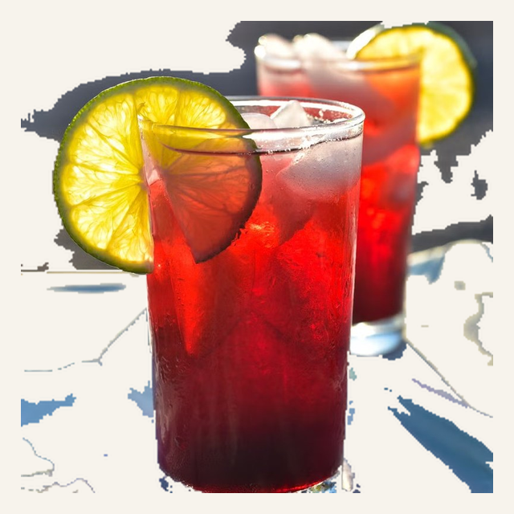
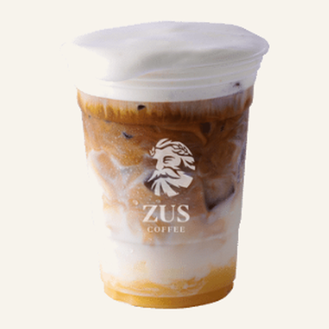

Jetinno Coffee Kiosk · 交互演示
基于 Figma 设计稿 Jetinno-coffee-vertical-1022 的 12 屏 1:1 复刻，已接入完整状态机：点击可走通点单全流程，弹窗、数量、支付方式、报错文案与出餐进度均为真实状态变化，空闲计时按设计说明生效，商品图与名称已替换为用户提供的 22 款真实饮品。购物车不再作为独立全屏页，而是从商品列表底部上滑的抽屉，下层商品页保持可见。界面文案本轮先统一为英文（语言框架仍保留 en / fr / zh 字典）。
① 购物车不再是独立页 ——
06-cart.html 已改为重定向桩；购物车统一是 04-shopping.html 上的底部抽屉，?cart=1 自动展开，旧链接自动跳转，关闭抽屉后停在 04-shopping.html。② 二次配置页背景沿用商品页 ——
05-custom.html 以 04-shopping.html 为底，叠加原弹窗层；弹窗后是同一套 30 卡网格 / 5 分类 / banner / 顶部栏，不再有旧 9 卡错位版式，背景只读不可点。③ logo 居中 —— 首页、支付页、制作中、制作完成的品牌标记统一水平居中（1080 画布中心 x=472）。
④ 支付页返回二次确认 —— 弹窗「您确定返回主页吗？您的购物车和个性化配置将自动清空。」；取消留在本页，确认后清空购物车与个性化配置并回首页。
⑤ 支付相关页顶部栏统一 —— 11-card / 16-pay / 19-order-confirm 共用同一套居中 logo + English / Help 胶囊 + 返回箭头，移除旧的错位白框。
⑥ 制作中 / 完成文案左对齐 —— 标题与副标题对齐状态栏与支付成功页的同一左边界（x=64）。
沿用 v13：方案 A 672 px 弹性栅格、纯英文
Price 单一总计、30 商品、Caramel Macchiato 甜度 4 档；沿用 v12：单价含配置加价、币种全站统一 CHF。回退：
python3 tools/version_manager.py restore v14-pre-fixes；恢复当前版：restore v14-cart-sheet-header；回到原始 1:1：python3 tools/rollback_refine.py。验证：tests/audit_v13.py + tests/audit_v14.py。
控制台在右下角齿轮按钮中：可跳页、切换支付结果、切换三类报错、跳过等待、替换轮播图、查看倒计时。在商品页点击底部购物车条，或从该条向上滑动，即可拉出购物车抽屉；在抽屉顶部向下滑动、点击空白处、点 × 或按 Esc 收起。建议用 1080×1920 或更高窗口打开。
主流程状态机
已实现的设计说明
待机与语言
- 三张 Banner 轮播，箭头 / 圆点 / 6 秒自动切换
- 选择语言后直接进入商品页
- 支付方式卡片可点选并反馈
- 全屏广告位点击可直接进入购买页（模式 2）
商品与定制
- 16 款真实商品图与名称；分类切换重排卡片
- 顶部分类导航切换，售罄商品给出提示
- 点击商品打开二次配置弹窗
- 咖啡豆 / 糖 / 温度三组选项可切换
- 加入购物车回列表；确认后从商品页上滑展开购物车抽屉
购物车与支付
- 购物车是从商品页底部上滑的 900×750 抽屉，下层商品页压暗保留
- 点底部购物车条或向上划展开；下滑 / 点遮罩 / × / Esc 收起
- 数量增减；从 1 再减删除并提供 UNDO
- 小计、总价、件数随操作实时重算
- 5 种支付方式切换；最多 9 个二维码切换
- POS 等待 → 成功 / 三类报错由控制台决定
三语单语界面
- 法语 / 英语 / 中文各一套完整文案，切换后整页统一替换
- 静态标题、分类、商品名、定制选项、购物车与支付文案全覆盖
- 报错提示、动态提示、页面标题与演示控制台同步切换
- 语言选择跨页面保存，地址参数可直接指定
- 自动巡检十二屏，确保不残留其它语言的词或汉字
计时与状态
- 商品 / 订单 / 支付 / 报错：100 秒无操作回首页
- 帮助弹窗：60 秒自动关闭回待机
- 出杯完成：30 秒无操作回首页
- 制作中四阶段每 5 秒推进，出杯时闪烁
- 报错页按说明「只换 icon + 文字」
界面语言 · 三套单语文案
十二屏界面已实现法语、英语、中文三套独立文案，任意时刻只显示一种语言：静态标题、顶部分类、商品名与标签、定制选项、购物车、支付与报错提示、演示控制台、动态提示与页面标题全部随语言切换，切换结果跨页面保存。语言下拉只有三项，按 L 可循环切换；也可用地址参数 ?lang=en、?lang=fr、?lang=zh 直接指定。下面三个入口分别以对应语言启动完整演示。
商品目录 · 22 款真实饮品
用户提供的 22 张商品图已统一处理成浅米底卡片图，替换全部占位商品：商品列表 9 格、定制页底层 22 格与弹窗大图、购物车 3 行、订单确认 3 行。点击分类导航会把该分类的商品排到前面；点商品卡进入定制页时，弹窗大图与标题跟随所选商品。每款商品的英语、法语、中文名称与分类译文统一配置在 i18n.json，原始素材保存在 assets/products/original/。
 美式咖啡经典
美式咖啡经典
焦糖玛奇朵经典 生椰摩卡经典
生椰摩卡经典
瑞幸冰美式浓缩 瑞幸摩卡奶咖
瑞幸摩卡奶咖
瑞幸卡布奇诺奶咖
瑞幸拿铁奶咖
生椰焦糖玛奇朵奶咖 法式香草拿铁奶咖
法式香草拿铁奶咖 洛神花冷萃茶饮
洛神花冷萃茶饮 雪顶棉花糖摩卡冰沙
雪顶棉花糖摩卡冰沙 咖啡摩卡奶咖
咖啡摩卡奶咖 天好焦糖玛奇朵奶咖
天好焦糖玛奇朵奶咖
可可碎片星冰乐冰沙
枫糖肉桂拿铁奶咖
芒果奶昔冰沙
莓果木槿茶饮
越南香料拿铁奶咖操作方式
- ← → 按流程顺序切屏
- G 返回 12 屏总览
- H 任意页打开帮助弹窗
- Space 跳过等待 / 推进流程
- C 开 / 收购物车抽屉
- L 循环切换英语 / 法语 / 中文
- Esc 关闭当前覆盖层（含抽屉）
?debug=1开启演示控制台?freeze=1冻结计时与自动跳转?raw=1按 1080×1920 原始尺寸查看?lang=en/?lang=fr/?lang=zh指定界面语言